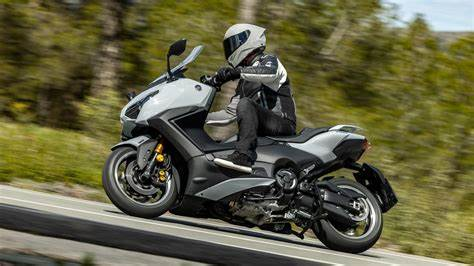
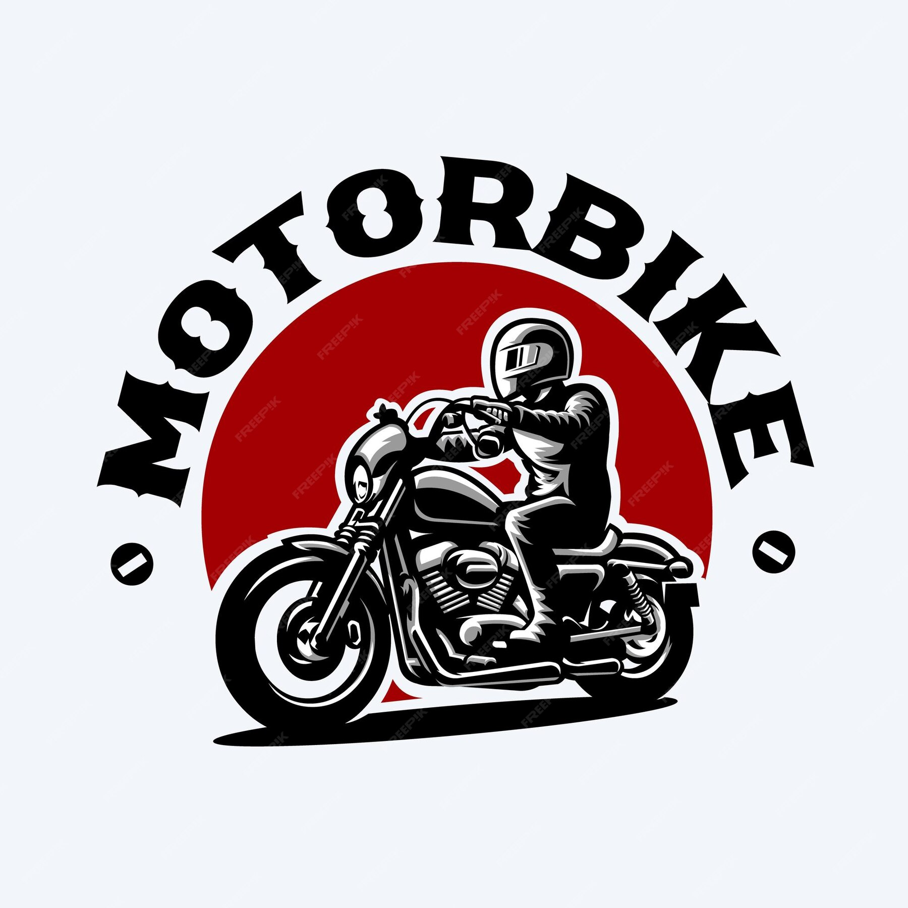

<html>
<html lang="es">
<head>
    <meta charset="UTF-8">
    <meta name="viewport" content="width=device-width, initial-scale=1.0">
    <title>Portada sobre Motos</title>
    <style>
        body {
            font-family: Arial, sans-serif;
            background-color: #f4f4f4;
            margin: 0;
            padding: 0;
            text-align: center;
        }
        header {
            background-color: #333;
            color: white;
            padding: 30px 0;
        }
        h1 {
            margin: 0;
            font-size: 50px;
        }
        p {
            font-size: 18px;
            color: #555;
        }
        .contenido {
            padding: 20px;
        }
        .imagen-portada {
            width: 80%;
            max-width: 600px;
            margin-top: 20px;
        }
        footer {
            background-color: #333;
            color: white;
            padding: 10px 0;
            position: fixed;
            width: 100%;
            bottom: 0;
        }
    </style>
</head>
<body>        
</html>           
</body>
</html>
<!DOCTYPE html>
<html lang="es">
<head>
   </head>
<body>
</html>

    <header>
        <h1>Bienvenidos al Mundo de las Motos</h1>
        <p>Todo lo que necesitas saber sobre el apasionante mundo de las motocicletas</p>
    </header>
<meta charset="UTF-8">
    <meta name="viewport" content="width=device-width, initial-scale=1.0">
    <title>Tabla con 10 Casillas</title>
    <style>
        table {
            width: 50%;
            border-collapse: collapse;
            margin: 20px auto;
        }
        td {
            border: 1px solid black;
            padding: 20px;
            text-align: center;
        }
    </style>
</head>
<body>
    <table>
        <tr>
            <td><a href="Historia1.html">Historia</a><br>
</td>
            <td><a href="Creacion2.html">Creacion</a><br
</td>
            <td><a href="Evolucion3.html">Evolucion</a><br>
</td>
            <td><a href="Origen Y Avances4.html">Origen Y Avances</a><br>
</td>
            <td><a href="Curiosidades5.html">Curiosidades</a><br>
</td>
            <td><a href="Datos 6.html">Datos</a><br>
</td>
            <td><a href="Empresas 7.html">Empresas</a><br>
</td>
            <td><a href="Modelo 8.html">Modelos</a><br>
</td>
            <td><a href="Formulario9.html">Formulario</a><br>
</td>
            <td><a href="Galeria 10.html">Galeria</a><br>
</td>
        </tr>
    </table>

        
<h1>Introducción</h1>
<p>El motociclismo es una de las disciplinas más apasionantes dentro del mundo del deporte. Desde su invención en 1885 por Gottlieb Daimler en Alemania, ha experimentado una interesante evolución a nivel tecnológico y de popularidad. En este artículo hablaremos sobre sus inicios y su historia hasta el día de hoy.</p>

        <h2>¿Por qué las motos son tan increíbles?</h2>
        <p>Las motocicletas son máquinas fascinantes que ofrecen libertad, emoción y una sensación de aventura única. Ya sea que las uses para viajes largos o para desplazarte en la ciudad, las motos son una excelente forma de transporte.</p>

<h1>Los Inicios del Motociclismo</h1>
<p>A finales del siglo XIX, la época de la revolución industrial, el mundo estaba en pleno cambio. La invención de la motocicleta en 1885 por Gottlieb Daimler y Wilhelm Maybach supuso un gran avance para la sociedad de la época. Aunque su modelo no se parecía mucho a las motocicletas modernas, pues estaba diseñada como un coche sin cabina con dos ruedas en lugar de cuatro. No obstante, la idea de tener un vehículo con dos ruedas, que permitiera a las personas desplazarse a más velocidad, se fue expandiendo rápidamente. Estos prototipos eran muy rudimentarios, con motores que apenas podían generar unos cuantos caballos de fuerza, y con una velocidad máxima que no superaba los 25 km/h. En su mayoría, las primeras motocicletas eran utilizadas para dar paseos y para las competencias en circuitos cerrados, donde los corredores competían en velocidad. Durante este periodo de la historia del motociclismo, la velocidad y el estímulo del público eran las únicas preocupaciones</p>        
        
        
        <h3>¿Cuáles son las principales categorías de motociclismo que existen?</h3>
<ul>

<li>Velocidad</li>
<li>Enduro</li>
<li>Motocross</li>
<li>Freestyle</li>
<li>Trial</li>
<li>Rally Raid</li>
<li>Supermotard</li>
                </ul>


    <footer>
        <p>&copy; 2025 Mundo de las Motos</p>
    </footer>
</body>
</html>